Image 1 of 1: ‘raster concept’
Raster Concept (Source: National Ecological
Observatory Network (NEON)) Image 1 of 1: ‘elevation Harvard forest’
Continuous Elevation Map: HARV Field Site Image 1 of 1: ‘USA landcover classification’
USA landcover classification Image 1 of 1: ‘spatial extent objects’
Spatial extent image (Image Source: National
Ecological Observatory Network (NEON)) Image 1 of 1: ‘resolution image’
Resolution image (Source: National Ecological
Observatory Network (NEON)) Image 1 of 1: ‘multi-band raster’
RGB multi-band raster image (Source: National
Ecological Observatory Network (NEON).)
Image 1 of 1: ‘vector data types’
Types of vector objects (Image Source: National
Ecological Observatory Network (NEON)) Image 1 of 1: ‘vector type examples’
Vector Type Examples
Image 1 of 1: ‘US difference projections’
Maps of the United States in different projections
(Source: opennews.org) Image 1 of 1: ‘datum fruit example’
Datum Fruit Example (Image
source ) Image 1 of 1: ‘projection citrus peel’
Projection Citrus Peel Example (Image from Prof Drika
Geografia, Projeções Cartográficas) Image 1 of 1: ‘UTM zones across the CONUS’
The UTM zones across the continental United States
(Chrismurf at English Wikipedia, via Wikimedia
Commons (CC-BY))
Image 1 of 1: ‘STAC browser screenshots’
Views of the STAC browser Image 1 of 1: ‘earth-search stac catalog views’
Views of the Earth Search STAC endpoint Image 1 of 1: ‘thumbnail of the sentinel-2 scene’
Overview of the true-color image (“thumbnail”) Image 1 of 1: ‘thumbnail of the landsat-8 scene’
Thumbnail of the Landsat-8 scene
Image 1 of 1: ‘raster plot with defualt setting’
Raster plot with rioxarray Image 1 of 1: ‘raster plot with robust setting’
Raster plot using the “robust” setting Image 1 of 1: ‘UTM zones across the CONUS’
The UTM zones across the continental United States
(Chrismurf at English Wikipedia, via Wikimedia
Commons (CC-BY)) Image 1 of 1: ‘raster plot masking missing values’
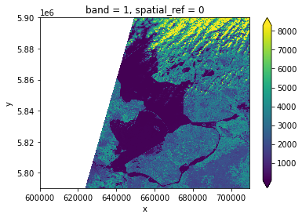Raster plot after masking out missing values Image 1 of 1: ‘multi-band raster’
Sketch of a multi-band raster image Image 1 of 1: ‘true-color image overview’
Overview of the true-color image (multi-band
raster) Image 1 of 1: ‘raster plot with correct aspect ratio’
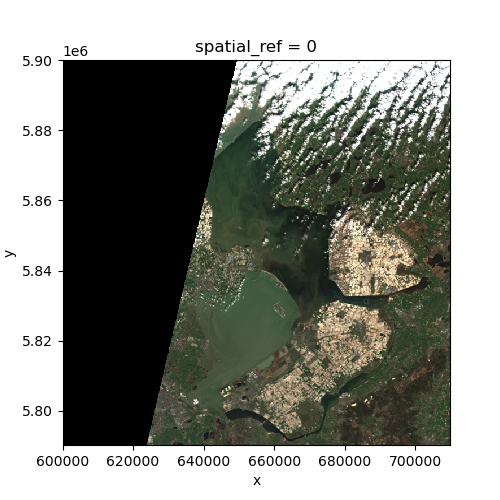Overview of the true-color image with the correct
aspect ratio
Image 1 of 1: ‘Pandas and Geopandas’
Image 1 of 1: ‘Crop fields inside the AOI’
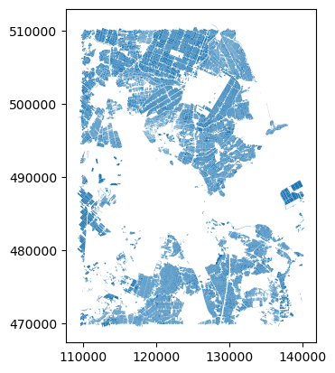 Image 1 of 1: ‘all wells in the NL’
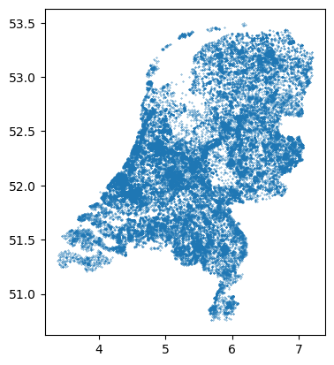 Image 1 of 1: ‘50m buffer around the fields’
Image 1 of 1: ‘Wells within 50m buffer of fields’
Image 1 of 1: ‘fields within 50m buffer of the wells, truncated’
Image 1 of 1: ‘Fields in 50m buffer of wells, not truncated’
Image 1 of 1: ‘waterways, rotated’
Image 1 of 1: ‘waterways, corrected’
Image 1 of 1: ‘Overview of the raster’
Image 1 of 1: ‘Raster cropped by a bounding box’
Image 1 of 1: ‘Ratser cropped by field polygons’
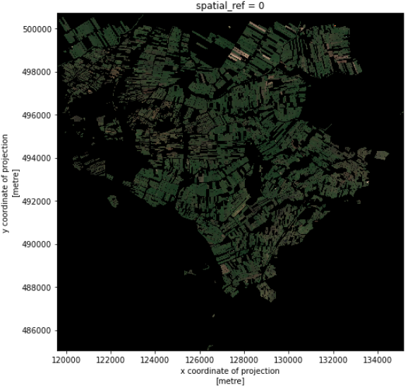 Image 1 of 1: ‘Raster croped by fields with gewascode 257’
Image 1 of 1: ‘Reproject match big to small’
Image 1 of 1: ‘Reproject match small to big’
Image 1 of 1: ‘PONE-NDVI image’
Source: Wu C-D, McNeely E, Cedeño-Laurent JG, Pan
W-C, Adamkiewicz G, Dominici F, et al. (2014) Linking Student
Performance in Massachusetts Elementary Schools with the “Greenness” of
School Surroundings Using Remote Sensing. PLoS ONE 9(10): e108548. https://doi.org/10.1371/journal.pone.0108548 Image 1 of 1: ‘red band image’
Image 1 of 1: ‘near infra-red band image’
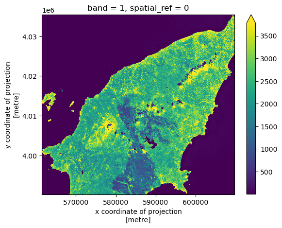 Image 1 of 1: ‘NDVI map’
Image 1 of 1: ‘NDVI histogram’
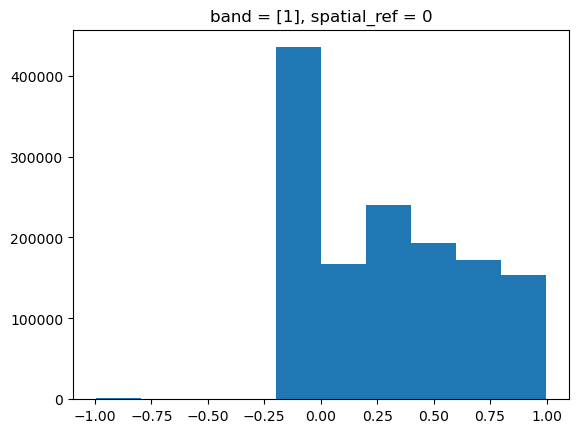 Image 1 of 1: ‘NDVI histogram with 50 bins’
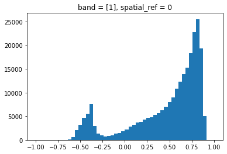 Image 1 of 1: ‘binned NDVI map’
Image 1 of 1: ‘NDVI classes’
Source: Image created for this lesson (license ) Image 1 of 1: ‘classified NDVI map’
Image 1 of 1: ‘NDVI map Texel’
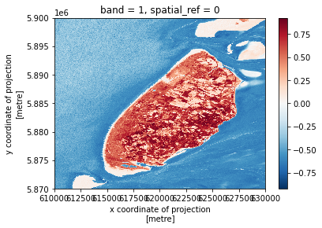 Image 1 of 1: ‘NDVI histogram Texel’
Image 1 of 1: ‘rasterization results’
Image 1 of 1: ‘Rasterization results Xarray’
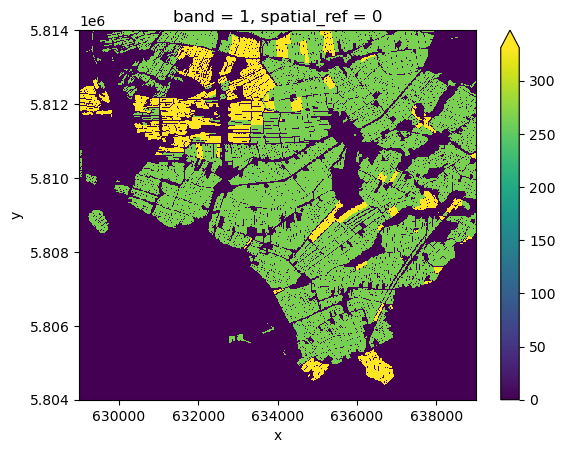
Image 1 of 1: ‘true color image scene’
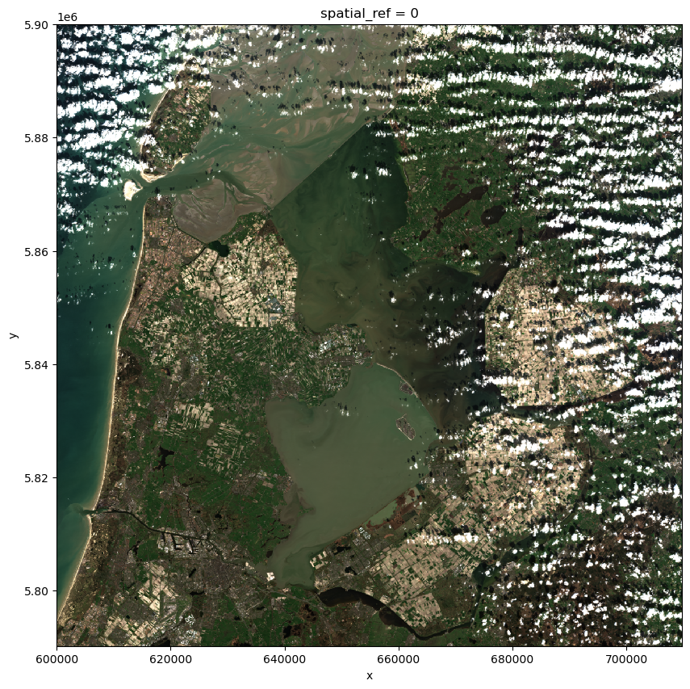Scene’s true-color image Image 1 of 1: ‘median filter true color image’
True-color image after median filtering Image 1 of 1: ‘DataArray with Dask’
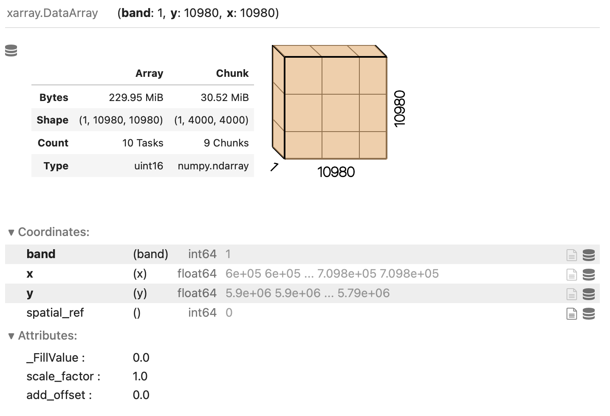Xarray Dask-backed DataArray Image 1 of 1: ‘dask graph’
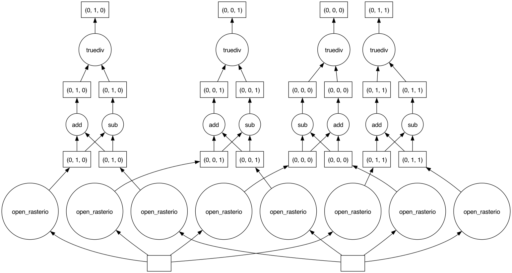Dask graph


{kind=link}